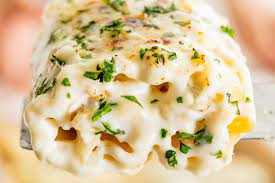
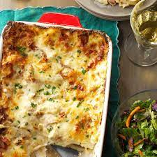

Chicken Alfredo Lasagna


Creamy homemade Alfredo sauce. Store-bought rotisserie chicken keeps prep simple and fast.
Ingredients
- 4 ounces thinly sliced pancetta, cut into strips
- 3 ounces thinly sliced prosciutto or deli ham, cut into strips
- 3 cups shredded rotisserie chicken
- 5 tablespoons unsalted butter, cubed
- 1/4 cup all-purpose flour
- 4 cups whole milk
- 2 cups shredded Asiago cheese, divided
- 2 tablespoons minced fresh parsley, divided
- 1/4 teaspoon coarsely ground pepper
- Pinch ground nutmeg
- 9 no-cook lasagna noodles
- 1-1/2 cups shredded part-skim mozzarella cheese
- 1-1/2 cups shredded Parmesan cheese
Procedure
- In a large skillet, cook pancetta and prosciutto over medium heat until browned. Drain on paper towels. Transfer to a large bowl; add chicken and toss to combine.
- For sauce, in a large saucepan, melt butter over medium heat. Stir in flour until smooth; gradually whisk in milk. Bring to a boil, stirring constantly; cook and stir 1-2 minutes or until thickened. Remove from heat; stir in 1/2 cup Asiago cheese, 1 tablespoon parsley, pepper and nutmeg.
- Preheat oven to 375°. Spread 1/2 cup sauce into a greased 13x9-in. baking dish. Layer with a third of each of the following: noodles, sauce, meat mixture, Asiago, mozzarella and Parmesan cheeses. Repeat layers twice.
- Bake, covered, 30 minutes. Uncover; bake 15 minutes longer or until bubbly. Sprinkle with remaining parsley. Let stand 10 minutes before serving.
Click To Return